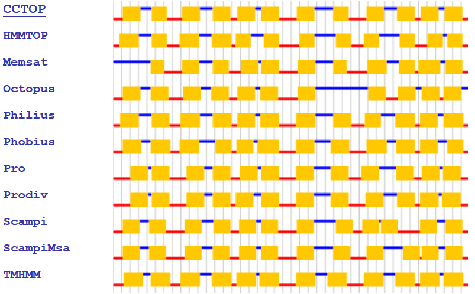
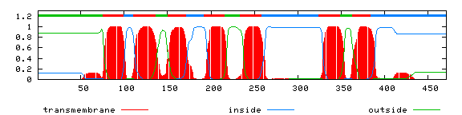
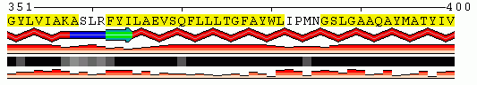
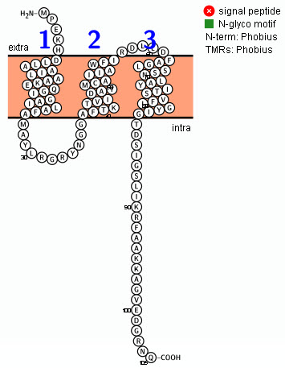
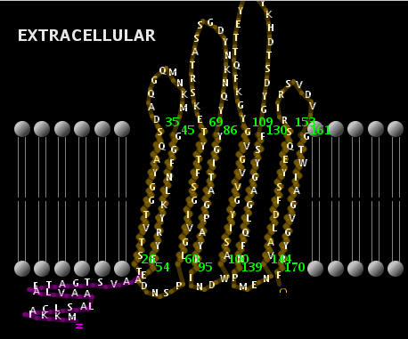
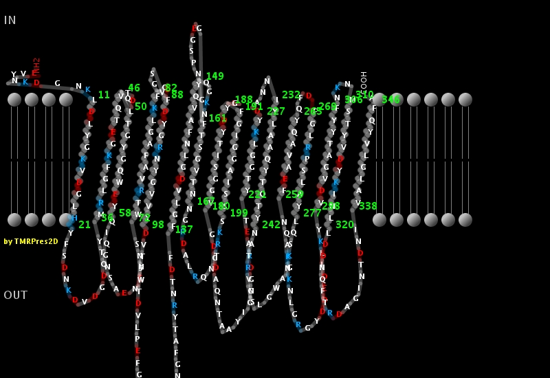

Protein Secondary Structure
Precautionary Quote:
"We should be quite remiss not to emphasize that despite the popularity of
secondary structural prediction schemes, and the almost ritual performance
of these calculations, the information available from this is of limited
reliability. This is true even of the best methods now known, and much more
so of the less successful methods commonly available in sequence analysis
packages. Running a secondary structure prediction on a newly-determined
sequence just because everyone else does so, is to be deplored, and the
fact that the results of such predictions are generally ignored is
insufficient justification for doing and publishing them." Arthur Lesk,
1988.
See here
for a more recent evaluation
(Reference: Yang Y et al. (2018) Brief Bioinformatics
19(3): 482–494).
-
JPred4
- is the latest version of the popular JPred protein secondary structure
prediction server which provides predictions by the JNet algorithm, one of
the most accurate methods for secondary structure prediction. In addition
to protein secondary structure, JPred also makes predictions of solvent
accessibility and coiled-coil regions.
(Reference: Drozdetskiy A et al. (2015) Nucleic Acids Res 43(W1): W389–W394). -
RaptorX
- RaptorX excels at secondary, tertiary and contact prediction for protein
sequences without close homologs in the Protein Data Bank (PDB). RaptorX
predicts protein secondary and tertiary structures, contact and distance
map, solvent accessibility, disordered regions, functional annotation and
binding sites. RaptorX also assigns confidence scores to predicted
structures.
(Reference: Yang Y et al. (2018) Brief Bioinformatics 19(3): 482–494). - PredictProtein (Rostlab; Technische Universität München, Germany) - they have substantially expanded the breadth of structural annotations, e.g. by adding predictions of non-regular secondary structure and intrinsically disordered regions, disulphide bridges and inter-residue contacts, and finally by also covering trans-membrane beta barrels structures. They have also added important resources for the prediction of protein function.
- PEP2D (G.P.S. Raghava, Scientist & Head Bioinformatics Center, Institute of Microbial Technology, India) - this Peptide Secondary Structure Prediction server that allows users to predict regular secondary structure in their peptides (e.g., H: Helix, E:Strand, C:Coil). Till date all the secondary structure prediction methods are optimized for proteins. Peptides may adopt diffrent secondary structure when integrated in proteins. Thus it is important to develop seperate method for predicting secondary structure of peptides instead of using protein secondary structure prediction methods.
- 2dSS (Biologie Computationnelle et Quantitative, Sorbonne Université, Paris, France) - is a web-server for visualising and comparing secondary structure predictions. It provides two main functionalities: 2D-alignment and compare predictions. The view 2D-alignment has been designed to visualise conserved secondary structure elements in a multiple sequence alignment (MSA). From this one can study the secondary structure content of homologous proteins (a protein family) and highlight its structural patterns.
-
PROTEUS2
- is a web server designed to support comprehensive protein structure
prediction and structure-based annotation. PROTEUS2 accepts either single
sequences (for directed studies) or multiple sequences (for whole proteome
annotation) and predicts the secondary and, if possible, tertiary
structure of the query protein(s). Unlike most other tools or servers,
PROTEUS2 bundles signal peptide identification, transmembrane helix
prediction, transmembrane β-strand prediction, secondary structure
prediction (for soluble proteins) and homology modeling (i.e. 3D structure
generation) into a single prediction pipeline.
(Reference: Montgomerie S et al. (2008) Nucleic Acids Res. 36(Web Server issue): W202-209). -
mCSM-PPI2
- predicts the effects of mutations on transmembrane proteins.
(Reference: Pires DEV et al. 2020. Nucl Acids Res 48 (W1): W147–W153).
For a metasite linked to a wide range of protein sequence analysis and structure predictions online programs, I recommend PredictProtein (ROSTLAB, Technische Universität München). Also see: SCRATCH Protein Predictor (Institute for Genomics & Bioinformatics, University of California, Irvine, U.S.A.)
Several great sites for online analysis of potential membrane spanning proteins are: (Test sequence ; see Orientation of Proteins in Membranes for 268 unique a-helical membrane protein structures)
- TMHMM - outdated prediction of transmembrane helices in proteins (Center for Biological Sequence Analysis, The Technical University of Denmark)
-
DeepTMHMM
- is a deep learning protein language model-based algorithm that can
detect and predict the topology of both alpha helical and beta barrels
proteins over all domains of life.
(Reference: Hallgren J et al (2022) https://doi.org/10.1101/2022.04.08.487609) - DAS - Transmembrane Prediction Server (Stockholm University, Sweden)
- SPLIT (D. Juretic, Univ. Split , Croatia) - the transmembrane protein topology prediction server provides clear and colourful output including beta preference and modified hydrophobic moment index.
-
OCTOPUS
- Using a novel combination of hidden Markov models and artificial neural
networks, OCTOPUS predicts the correct topology for 94% of the a dataset
of 124 sequences with known structures.
(Reference: Viklund, H. & Elofsson, A. 2008. Bioinformatics 24: 1662-1668) -
Phobius
- is a combined transmembrane topology and signal peptide predictor
(Reference: L. Käll et al. 2004. J. Mol. Biol. 338: 1027-1036)
This tool can also be accessed here (EBI). -
CCTOP
(Consensus Constrained TOPology prediction) server - utilizes 10 different
state-of-the-art topology prediction methods, the CCTOP server
incorporates topology information from existing experimental and
computational sources available in the PDBTM, TOPDB and TOPDOM databases
using the probabilistic framework of hidden Markov model. The server
provides the option to precede the topology prediction with signal peptide
prediction and transmembrane-globular protein discrimination.
(Reference: Dobson L et al. (2015) Nucleic Acids Res 43(W1): W408–W412). -
MEMSATSVM
- is an improved transmembrane protein topology prediction using SVMs.
This method is capable of differentiating signal peptides from
transmembrane helices.
(Reference: Reeb J et al. (2015) Proteins; 83(3): 473-84). -
MEMEMBED
- prediction of membrane protein orientation. is able to quickly and
accurately orientate both alpha-helical and beta-barrel membrane proteins
within the lipid bilayer, showing closer agreement with experimentally
determined values than existing approaches. We also demonstrate both
consistent and significant refinement of membrane protein models and the
effective discrimination between native and decoy structures
(Reference: Nugent T & DT Jones (2013) BMC Bioinformatics 14: 276) - TMMOD - Hidden Markov Model for Transmembrane Protein Topology Prediction (Dept. Computer & Information Sciences, University of Delaware, U.S.A.) - on the results page click on "show posterior probabilities" to see a TMHMM-type diagram
- PRED-TMR2 (C. Pasquier & S.J.Hamodrakas,Dept. Cell Biology and Biophysics, Univ. Athens, Greece) - when applied to several test sets of transmembrane proteins the system gives a perfect prediction rating of 100% by classifying all the sequences in the transmembrane class. Only 2.5% error rate with nontransmembrane proteins.
-
TOPCONS
- computes consensus predictions of membrane protein topology using a
Hidden Markov Model (HMM) and input from five state-of-the-art topology
prediction methods.
(Reference: Tsirigos KD et al. (2015). Nucleic Acids Res. 43(Webserver issue): W401-W407). - ΔG prediction server - Given the amino acid sequence of a putative transmembrane (TM) helix, the server gives a prediction of the corresponding apparent free energy difference, ΔGapp, for insertion of this sequence into the Endoplasmic Reticulum (ER) membrane by means of the Sec61 translocon. The server runs in two different "modes", for two different types of queries:
- ΔG prediction. Predict ΔGapp for membrane insertion of a potential TM helix.
- Full protein scan. Scan a protein sequence for putative TM helices.
-
MINNOU
(Membrane protein IdeNtificatioN withOUt) explicit use of hydropathy
profiles and alignments) - predicts alpha-helical as well as beta-sheet
transmembrane (TM) domains based on a compact representation of an amino
acid residue and its environment, which consists of predicted solvent
accessibility and secondary structure of each amino acid.
(Reference: Cao et al. 2006. Bioinformatics 22: 303-309).
A legend to help interpret the results in here.



For drawing the structure of transmembrane proteins two sites are available:
-
Protter
- an open-source tool for interactive integration and visualization of
annotated and predicted protein sequence features together with
experimental proteomic evidence. Protter supports numerous proteomic file
formats and automatically integrates a variety of reference protein
annotation sources, which can be readily extended via modular plug-ins. A
built-in export function produces publication-quality customized protein
illustrations, also for large datasets.
(Reference: U. Omasits et al. 2014. Bioinformatics. 30:884-886).
Diagram of the holin from bacteriophage lambda generated with Protter: -
TMRPres2D
(TransMembrane protein Re-Presentation in 2 Dimensions tool) - this Java
tool takes data from a variety of protein folding servers and creates
uniform, two-dimensional, high analysis graphical images/ models of
alpha-helical or beta-barrel transmembrane proteins.
(Reference: I.C. Spyropoulos et al. 2004. Bioinformatics 20: 3258-3260).


Signal peptide recognition & subcellular localization:
A. Bacterial proteins
- PSORTb (Brinkman Lab, Simon Fraser Univ., Canada) - provides probably the most accurate bacterial protein subcellular localization predictor. Alternatively use PSORT (Univ. Tokyo, Japan) - a series of programs for the prediction of protein localization sites in cells. Choose programs specific for for animal, yeast, plant or bacterial ( Gram-negative or Gram- positive) proteins.
-
PSLpred
- is a SVM based method, predicts 5 major subcellular localization
(cytoplasm, inner-membrane, outer- membrane, extracellular, periplasm) of
Gram-negative bacteria. This method includes various SVM modules based on
different features of the proteins. The hybrid approach achieved an
overall accuracy of 91%, which is best among all the existing methods for
the subcellular localization of prokaryotic proteins.
(Reference: M. Bhasin et al. (2005) Bioinformatics 21: 2522-2524.) -
CELLO
subCELlular LOcalization predictive system - assigns Gram-negative
proteins to the cytoplasm , inner membrane, periplasm, outer membrane or
extracellular space with overall prediction accuracy of ca. 89% . Also
analyzes eukaryotic and Gram-positive proteins.
(Reference: C.S. Yu et al. 2004. Protein Sci. 13:1402-1406).
The updated CELLO2GO (Protein subCELlular LOcalization Prediction with Functional Gene Ontology Annotation) - CELLO2GO should be a useful tool for research involvingcomplex subcellular systems because it combines CELLO and BLAST into one platform and its output is easily manipulated such that the user-specific questions may be readily addressed
(Reference: Yu CS et al. 2014. PLoS ONE 9: e99368). - SignalP - predicts the presence and location of signal peptide cleavage sites in Gram-positive, Gram-negative and eukaryotic proteins (Center for Biological Sequence Analysis, The Technical University of Denmark). For an example of a periplasmic protein use test sequence MalE.
-
Phobius
- is a combined transmembrane topology and signal peptide predictor
(Reference: L. Käll et al. 2004. J. Mol. Biol. 338: 1027-1036). - LipoP 1.0 (Center for Biological Sequence Analysis Technical University of Denmark) - allows prediction of where signal peptidases I & II cleavage sites from Gram negative bacteria will cleave a protein.
-
SecretomeP
- produces ab initio predictions of non-classical i.e. not signal peptide
triggered protein secretion. The method queries a large number of other
feature prediction servers to obtain information on various
post-translational and localizational aspects of the protein, which are
integrated into the final secretion prediction
(Reference: J.D. Bendtsen et al. 2005. BMC Microbiology 5: 58). -
SSPRED
- Identification & classification of proteins involved in bacterial
secretion systems. Do not submit more than four proteins at once.
(Reference: Pundhir, S., & Kumar, A. 2011. Bioinformation 6: 380-382). - Signal Find Server - includes (a) FlaFind which predicts archaeal class III (type IV pilin-like) signal peptides (class III signal peptides) and their prepilin peptidase cleavage sites; (b) EppA-pilinFind which predicts class III signal peptides processed by a unique archaeal prepilin peptidase, EppA; (c) TatFind which predicts archaeal AND bacterial Twin-Arginine Translocation (Tat) signal peptides; (d) PilFind which predicts bacterial type IV pilin-like signal peptides and their prepilin peptidase cleavage sites; and, (e) TatLipo which predictes haloarchaeal Tat signal peptides that contain a SPase II cleavage site (lipobox).
-
Signal-3L 2.0
- is an online server for predicting the N-terminal protein signal
peptide, and the input is the amino acid sequence only. It is constructed
with a hierarchical mixture model, which contains the following three
layers: (1) Discrimination of SP (Signal Peptide) proteins and TMH
(TransMembrane Helical) proteins from the other globular proteins; (2)
Recognizing SP proteins from TMH proteins; and, (3) Identifying the
cleavage sites of SP proteins.
(Reference: Y-Z. Zhang & H-B. Shen. Journal of Chemical Information and Modeling, 2017, 57: 988-999) - Signal Find Server - provides several distinct programs: (a) FlaFind predicts archaeal class III (type IV pilin-like) signal peptides (class III signal peptides) and their prepilin peptidase cleavage sites. (b) EppA-pilinFind predicts class III signal peptides processed by a unique archaeal prepilin peptidase, EppA. (c) TatFind predicts archaeal AND bacterial Twin-Arginine Translocation (Tat) signal peptides. (d) PilFind predicts bacterial type IV pilin-like signal peptides and their prepilin peptidase cleavage sites. (e) TatLipo predictes haloarchaeal Tat signal peptides that contain a SPase II cleavage site (lipobox).
B. Eukaryotic proteins
-
DeepLoc
- predicts the subcellular localization of eukaryotic proteins. It can
differentiate between 10 different localizations: Nucleus, Cytoplasm,
Extracellular, Mitochondrion, Cell membrane, Endoplasmic reticulum,
Chloroplast, Golgi apparatus, Lysosome/Vacuole and Peroxisome. Their model
achieves a good accuracy (78% for 10 categories; 92% for membrane-bound or
soluble), outperforming current state-of-the-art algorithms, including
those relying on homology information.
(Reference: Almagro Armenteros JJ et al. 2017. Bioinnformatics; 33(21): 3387-3395). -
WoLF PSORT
(National Institute of Advanced Science and Technology, Japan) - is an
extension of the PSORT II program for protein subcellular localization
prediction, which is based on the PSORT principle. WoLF PSORT converts a
protein's amino acid sequences into numerical localization features; based
on sorting signals, amino acid composition and functional motifs. After
conversion, a simple k-nearest neighbor classifier is used for prediction.
(Reference: Horton P et al. (2007) Nucleic Acids Res. 35(Web Server issue): W585–W587). -
SecretomeP
- produces ab initio predictions of non-classical i.e. not signal peptide
triggered protein secretion. The method queries a large number of other
feature prediction servers to obtain information on various
post-translational and localizational aspects of the protein, which are
integrated into the final secretion prediction
(Reference: J.D. Bendtsen et al. 2005. BMC Microbiology 5: 58).
Other sites for secondary structure predictions include:
-
JPred4
- is the latest version of the popular JPred protein secondary structure
prediction server which provides predictions by the JNet algorithm, one of
the most accurate methods for secondary structure prediction. In addition
to protein secondary structure, JPred also makes predictions of solvent
accessibility and coiled-coil regions. JPred4 features higher accuracy,
with a blind three-state (a-helix, ß-strand and coil) secondary structure
prediction accuracy of 82.0% while solvent accessibility prediction
accuracy has been raised to 90% for residues <5% accessible.
(Reference: A. Drozdetskiy et al. 2015.Nucl. Acids Res. 43 (W1): W389-W394). - Network Protein Sequence @nalysis at IBCP - (Institut de Biologie et Chemie des Proteines, Lyon, France) - has DSC, GORIV, Predator, SOPMA and Heirarchical Neural Network Method plus older programs.
-
PSIPRED Protein Sequence Analysis Workbench
- includes PSIPRED v3.3 (Predict Secondary Structure); DISOPRED3 &
DISOPRED2 (Disorder Prediction); pGenTHREADER (Profile Based Fold
Recognition); MEMSAT3 & MEMSAT-SVM (Membrane Helix Prediction); BioSerf
v2.0 (Automated Homology Modelling); DomPred (Protein Domain Prediction);
FFPred 3 (Eukaryotic Function Prediction); GenTHREADER (Rapid Fold
Recognition); MEMPACK (SVM Prediction of TM Topology and Helix Packing)
pDomTHREADER (Fold Domain Recognition); and, DomSerf v2.0 (Automated Domain
Modelling by Homology).
(Reference: Buchan DWA et al. 2013. Nucl. Acids Res. 41 (W1): W340-W348). - For a full range of properties of your protein including hydrophobicity, alpha helix, beta-sheet plots see ProScale (ExPASy, Switzerland).
Disordered states:
Many proteins containing regions that do not form well-defined structures and the following new programs help define these regions:
-
D2P2
(Database of Disordered Protein Predictions) - A battery of disorder
predictors and their variants, VL-XT, VSL2b, PrDOS, PV2, Espritz and
IUPred, were run on all vast number of protein sequences. Searches are
provided against the database; and links are provided to each of the
disordered servers.
(Reference: Oates ME et al. (2013). Nucleic Acids Res 41(D1): D508-D516). -
MORERONN
(Regional Order Neural Network) - is useful for surveying disorder in
proteins as well as designing expressible constructs for X-ray
crystallography. This web server only accepts 3500 amino acids at a time.
(Reference: Z.R. Yang et al. 2005. Bioinformatics 21: 3369-3376).
For explanation of native disorder see here. -
IntFOLD
Integrated Protein Structure and Function Prediction Server - will amongst
other things make an intrinsic disorder prediction
(Reference: McGuffin L.J. et al. 2019. Nucleic Acids Res. 47(W1): W408-W413). -
PrDOS
is a server to predict natively disordered regions of a protein chain from
its amino acid sequence. PrDOS returns disorder probability of each residue
as prediction results.
(Reference: Ishida T, & Kinoshita K (2007) Nucleic Acids Res. 35(Web Server issue): W460-4.). -
MFDp
(Multilayered Fusion-based Disorder predictor) - aims to improve over the
current disorder predictors.
(Reference: M.J. Mizianty et al. 2010. Bioinformatics 26: i489-i496) -
MoRFpred
- Molecular recognition features (MoRFs) are short binding regions located
within longer intrinsically disordered regions that bind to protein
partners via disorder-to-order transitions. MoRFs are implicated in
important processes including signaling and regulation. MoRFpred is a
computational tool for sequence-based prediction and characterization of
short disorder-to-order transitioning binding regions in proteins which
identifies all MoRF types (a, ß, coil and complex).
(Reference: F.M. Disfani et al. 2012. Bioinformatics 28: i75-i83). -
Scooby-domain
(Sequence hydrophobicity predicts domains) is a method to identify globular
regions in protein sequence that are suitable for structural studies. The
Scooby-domain JAVA applet can be used as a tool to visually identify
'foldable' regions in protein sequence. Interesting graphics.
(Reference: R.A. George et al. 2005. Nucl. Acids Res. 33: W160-W163).
For estimations on the antigenicity of regions of proteins see:
- Antigenicity Plot (JaMBW module) - Given a sequence of amino acids, this program computes and plots the antigenicity along the polypeptide chain, as predicted by the algorithm of Hopp & Woods (1981).
-
SAbPred
- is a structure-based antibody prediction server
(Reference: J. Dunbar et al. Nucleic Acids Res. 2016; 44(Web Server issue): W474–W478). - EMBOSS Antigenic (EMBOSS package) - this program predicts potentially antigenic regions of a protein sequence, using the method of Kolaskar & Tongaonkar (1990).
- OptimumAntigen™ Design Tool (GenScript) - peptides are optimized using the industry's most advanced antigen design algorithm. Each peptide is measured against several protein databases to confirm the desired epitope specificity. Benefits of using the OptimumAntigen™ Design Tool include avoidance of unexposed epitopes, ability to specify desired cross-reactivity, strong antigenicity of chosen peptide, identification of the best conjugation and presentation options for your desired assay(s), use of built in peptide tutorial for synthesis and solubility, and guaranteed immune response.
-
EpiC
(The ProteomeBinders Epitope Choice Resource) collates and presents a
structure-function summary and antigenicity prediction of your protein to
help you design antibodies that are appropriate to your planned
experiments.
(Reference: Haslam, N. & Gibson. T. Proteome Res., 2010, 9 (7): 3759–3763). -
SVMTriP
- is a method to predict antigenic epitopes using support vector machine to
integrate tri-peptide similarity and propensity.
(Reference: B. Yao et al. PLoS ONE (2012); 7(9):e45152).
To screen for coiled-coil regions in proteins use:
- Prediction of coiled coil regions in proteins we have PCOILS, MARCOILS, and DeepCoil.
-
Paircoils
(MIT Laboratory for Computer Science, U.S.A.)
(Reference: B. Berger et al. 1995. Proc. Natl. Acad. Sci. USA, 92: 8259-8263) -
For coiled-coiled prediction there is
NPSA
and Waggawagga
(Reference: Simm D et al. (2015) Bioinformatics 31(Issue 5): 767–769). -
Socket2.0
- identifies α-helical coiled coil (CC) regions with any number of helices,
and KIH interfaces with any of the 20 proteinogenic residues or
incorporating nonnatural amino acids.
(Reference: Kumar P, Woolfson DN. (2021) Bioinformatics 37(23): 4575-4577). -
REPPER
(REPeats and their PERiodicities) - detects and analyzes regions with short
gapless repeats in proteins. It finds periodicities by Fourier Transform
(FTwin) and internal similarity analysis (REPwin). FTwin assigns numerical
values to amino acids that reflect certain properties, for instance
hydrophobicity, and gives information on corresponding periodicities. REPwin
uses self-alignments and displays repeats that reveal significant internal
similarities. They are complemented by PSIPRED and coiled coil prediction
(COILS), making the server a useful analytical tool for fibrous proteins.
(Reference: M. Gruber et al. 2005. Nucl. Acids Res. 33: W239-W243).
Beta-barrel outer membrane proteins: (Test sequence)
- PRED-TMßß (Bagos, P. G., et al. Dept Cell Biology & Biophysics, University of Athens, Greece) - employs a Hidden Markov Model method, capable of predicting and discriminating beta-barrel outer membrane proteins. Gives one the opportunity to download a custom image plot or a 2D representation (see below):
- BetaTPred2 (Bioinformatics Center, Institute of Microbial Technology, India) - predict ß turns in proteins from multiple alignment by using neural network from the given amino acid sequence. For ß turn prediction, it uses the position specific score matrices generated by PSI-BLAST and secondary structure predicted by PSIPRED. For a classification of the ß turn type use BetaTurns.
- HHomp - detection of outer membrane proteins by HMM-HMM comparisons
- ConBBPred - Consensus Prediction of Transmembrane Beta-Barrel Proteins - gives one a choice of eight prediction programs.

Metasite:
- Scratch Protein Predictor - (Institute for Genomics and Bioinformatics, University California, Irvine) - programs include: ACCpro: the relative solvent accessibility of protein residues; CMAPpro: Prediction of amino acid contact maps; COBEpro: Prediction of continuous B-cell epitopes; CONpro: predicts whether the number of contacts of each residue in a protein is above or below the average for that residue; DIpro: Prediction of disulphide bridges; DISpro: Prediction of disordered regions; DOMpro: Prediction of domains; SSpro: Prediction of protein secondary structure; SVMcon: Prediction of amino acid contact maps using Support Vector Machines; and, 3Dpro: Prediction of protein tertiary structure (Ab Initio).
-
MESSA:
Meta-Server for protein sequence analysis - provides secondary structure
(PSIPRED, SSPRO); coil and loop (DISEMBL) and flexible loop (DISEMBL)
analysis, identification of low complexity (SEG) and disordered regions
(IsUnstruct, DISOPRED, DISEMBL,DISPRO); transmembrane helices (TMHMM,
TOPPRED,HMMTOP, MEMSAT); TM Helices and signal peptides (MEMSAT_SVM,
Phobius); signal peptides (SignalP HMM Mode, SignalP NN Mode); coiled coils
(COILS) and positional conservation. Multiple Sequence Alignment of
confident BLAST hits, filtered by less than 90% identity and more than 40%
coverage, are used to calculate the positional conservation indices of
residues in the sequence. The conserved residues usually play important
roles in maintaining the function or structure of a protein. The residues
are highlighted from white, through yellow to dark red as the conservation
level increases. Function Prediction: This section contains predicted
function annotation, GO terms and EC numbers (if the query is an enzyme). A
confidence level ("very confident", "confident" or "probable") is provided
for each prediction.
(Reference: Q. Cong & N.V. Grishin. BMC Biology 2012, 10:82). - Quick2D - overview of secondary structure including coiled-cois, transmembrane helices and disordered regions.
Updated: December, 2025